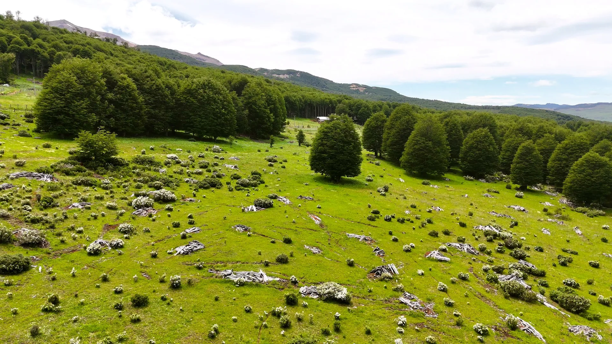
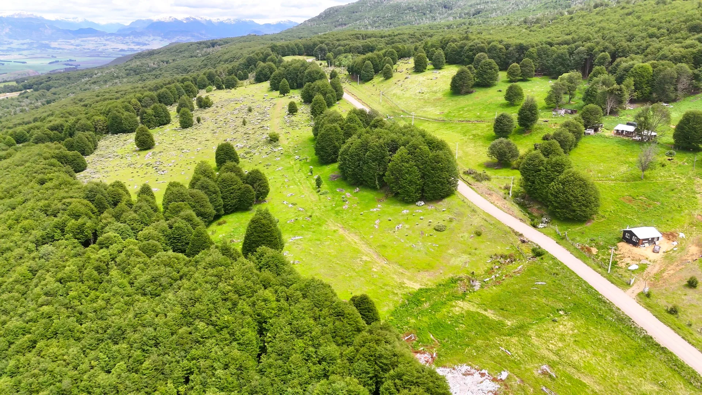
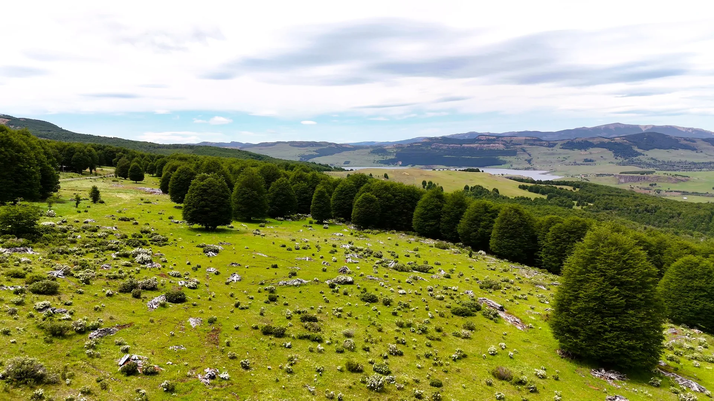
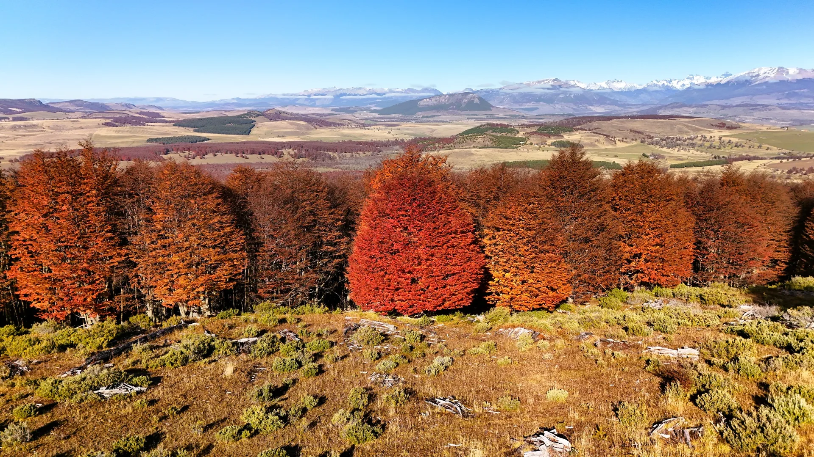
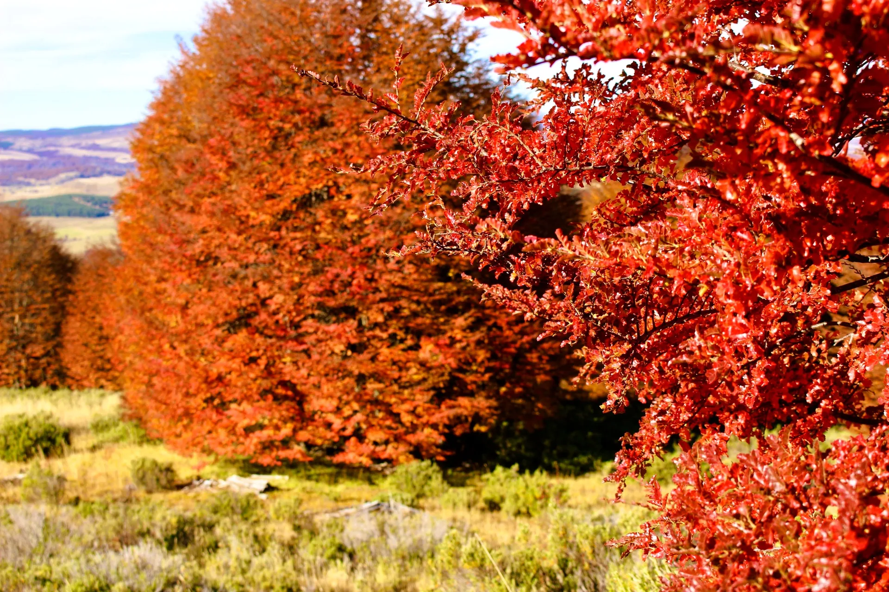
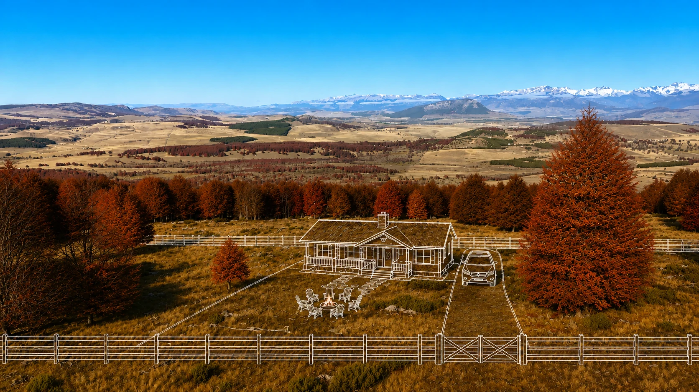
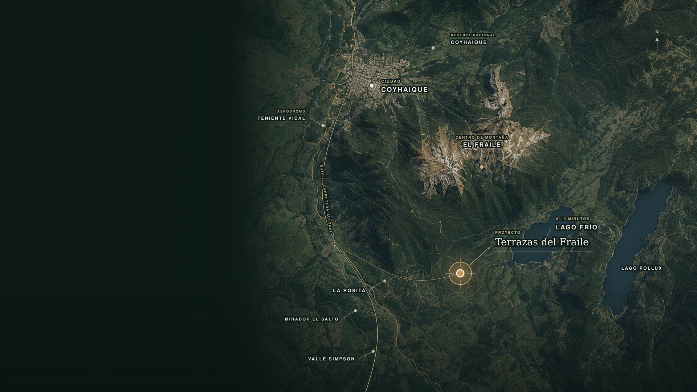

Pago contado
Precio lanzamiento
$30.900.000
Precio lista: $35.900.000
Beneficio: $5.000.000
Terrazas del Fraile es un proyecto de parcelas desde 5.000 m², a pocos minutos de Coyhaique, donde montaña, bosque, nieve y lago se encuentran para ofrecer una nueva forma de vivir y disfrutar la Patagonia durante todo el año.






Imagen referencialActualmente el proyecto se encuentra en proceso de subdivisión ante el SAG. Comprar en esta etapa permite acceder a precios preferenciales antes de finalizar su desarrollo.
Precio lista: $35.900.000
Beneficio: $5.000.000
Sujeto a evaluación y condiciones de la institución financiera.
Solicitar informaciónCuotas transformadas a UF, sin interés.

Terrazas del Fraile se emplaza en el sector El Fraile, en conexión con la Ruta 7 — Carretera Austral.
Desde el proyecto puedes acceder a Lago Frío, Lago Pollux, el Centro de Montaña El Fraile y los principales servicios de Coyhaique.
Ver en Google MapsDéjanos tus datos y coordinaremos una visita para que conozcas el proyecto y su entorno.